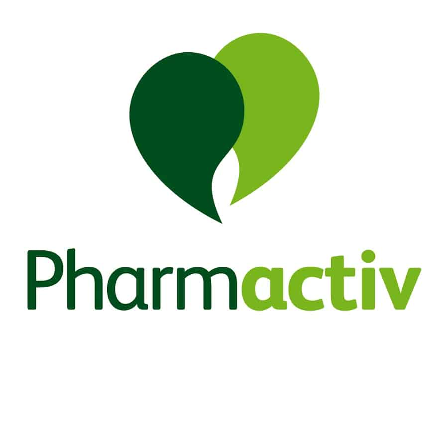
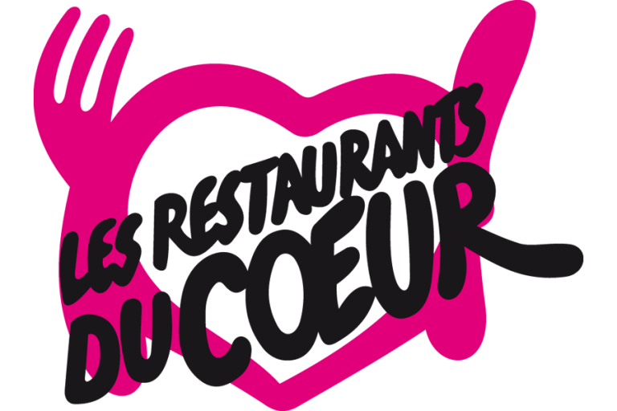

Depuis septembre 2024, j'ai intégré l'Institut Français de la Presse au sein de l'Université Paris Panthéon-Assas pour le Master 2 Information, Communication parcours Médias et Mondialisation
De février à mai 2024, j'ai participé à une mobilité intercampus à Singapour dans le cadre de mon dernier semestre du Global BBA de l'ESSEC.
De septembre à décembre 2023, j'ai effectué un échange universitaire au Canada à Montréal dans l'école UQAM (Université du Québec à Montréal).
De février à mai 2022, j'ai participé à une mobilité intercampus au Maroc, à Rabat dans le cadre de mon quatrième semestre du Global BBA de l'ESSEC.
De septembre 2020 à juin 2024, j'ai intégré le Global BBA de l'ESSEC Business School duquel j'ai obtenu mon diplôme avec la mention Dean's List, celle-ci signifie que j'étais classée dans les 10% de ma promotion 2020-2024.
Depuis septembre 2024, j'ai intégré la fondation WWF France en alternance en tant que Assistante Communication. J'effectue des missions diverses comme gestion des réseaux sociaux et du site web, relation avec les journalistes, organisation des demandes médias, participation au développement de la communication des projets sur le terrain...
En février 2024, j'ai participé à l'élaboration de la convention commerciale annuelle de Chronopost aux côtés de l'agence événementielle HotelProFinder. Durant ces 2 jours d'événement, j'ai notamment accueilli les participants et les partenaires, aidé à l'organisation des plénières,...
De mai à août 2021, j'ai réalisé mon premier stage au sein du groupe Chanel chez ERES en tant que Conseillère en Vente. Cette première expérience professionnelle m'a permis de découvrir le monde de l'entreprise, en particulier le secteur du luxe. Durant ce stage, je devais notamment accueillir les clients et les conseiller, gérer le pop-up et ses stocks ainsi que faire le merchandising.

De janvier à juin 2023, j'ai effectué mon stage de fin d'étude pendant 6 mois au sein du groupement pharmaceutique Pharmactiv, appartenant à l'OCP Phoenix. Au sein de ce stage, j'ai été chargé de Communication et Événementielle qui me permettait de faire de nombreuses missions (organisation du congrès annuel, posts sur LinkedIn, gestion de projets, exécution de graphisme...).

En décembre 2022, je suis allée donner un coup de main pendant mes vacances aux Restos du Coeur de Cany-Barville en Normandie. J'ai aidé les équipes de bénévoles à gérer les stocks, procédé à la distribution alimentaire le mardi et le vendredi ainsi qu'à préparer et donner les cadeaux de Noël prévu pour les enfants.

En juillet 2022, j'ai fait mon stage nommé "terrain" en Inde dans l'association Mitraniketan, une organisation non gouvernementale située près de la capitale du Kerala en Inde. C'est une école qui accueille des enfants défavorisés ainsi que des femmes rurales. Durant cette expérience hors du commun, j'ai découvert une nouvelle culture et un nouveau mode de vie tout en enseignant des cours de français à des élèves de primaire et collège.
De janvier à juin 2023, j'ai effectué mon stage de fin d'étude pendant 6 mois au sein du groupement pharmaceutique Pharmactiv, appartenant à l'OCP Phoenix. Au sein de ce stage, j'ai été chargé de Communication et Événementielle qui me permettait de faire de nombreuses missions (organisation du congrès annuel, posts sur LinkedIn, gestion de projets, exécution de graphisme...).
A la suite de mon stage, j'ai été embauché jusqu'en août 2023 en CDD puis de juillet à septembre 2024.